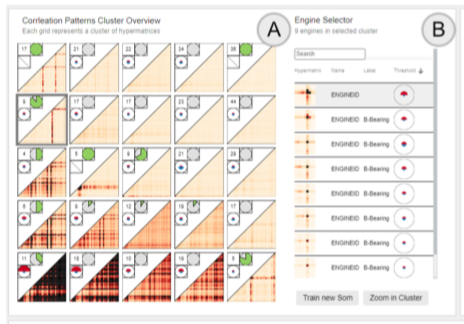

IRVINE: A Design Study on Analyzing Correlation Patterns of Electrical Engines

Venue. TVCG (2021) Full paper
Authors. Joscha Eirich, Jakob Bonart, Dominik Jäckle, Michael Sedlmair, Ute Schmid, Kai Fischbach, Tobias Schreck, Jürgen Bernard
Abstract. In this design study, we present IRVINE, a Visual Analytics (VA) system, which facilitates the analysis of acoustic data to detect and understand previously unknown errors in the manufacturing of electrical engines. In serial manufacturing processes, signatures from acoustic data provide valuable information on how the relationship between multiple produced engines serves to detect and understand previously unknown errors. To analyze such signatures, IRVINE leverages interactive clustering and data labeling techniques, allowing users to analyze clusters of engines with similar signatures, drill down to groups of engines, and select an engine of interest. Furthermore, IRVINE allows to assign labels to engines and clusters and annotate the cause of an error in the acoustic raw measurement of an engine. Since labels and annotations represent valuable knowledge, they are conserved in a knowledge database to be available for other stakeholders. We contribute a design study, where we developed IRVINE in four main iterations with engineers from a company in the automotive sector. To validate IRVINE, we conducted a field study with six domain experts. Our results suggest a high usability and usefulness of IRVINE as part of the improvement of a real-world manufacturing process. Specifically, with IRVINE domain experts were able to label and annotate produced electrical engines more than 30% faster.
Best Paper Award